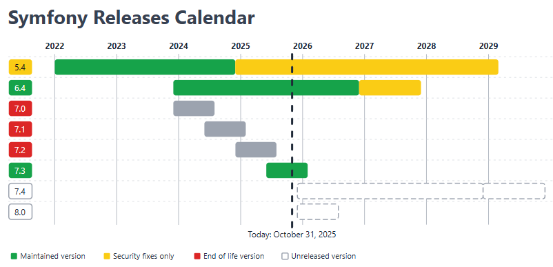

📘 TEMA 1 — Introducció a Symfony
1. Què és un framework?
Un framework és una eina que proporciona un conjunt d’elements i regles per a facilitar el desenvolupament d’aplicacions web.
En el cas dels frameworks PHP, ofereixen:
- Una estructura de treball predefinida (normalment basada en el patró MVC).
- Eines per a crear i gestionar models de dades, controladors i vistes.
- Suport per a rutes, injecció de dependències, seguretat i testejos automàtics.
Això permet que el codi siga més organitzat, modular i fàcil de mantindre.
2. Exemples de frameworks PHP
Actualment hi ha molts frameworks PHP disponibles, entre els que destaquem:
| Framework | Any | Característiques principals |
|---|---|---|
| Laravel | 2011 | Elegant, simple i amb gran comunitat. Ideal per a projectes nous. |
| Symfony | 2005 | Molt estructurat, modular i estable. Segueix bones pràctiques de programació. |
| CodeIgniter | 2006 | Lleuger i ràpid d’aprendre, però més limitat. |
| Phalcon | 2012 | Extremadament ràpid i flexible, pot funcionar com a microframework. |
| CakePHP | 2005 | Senzill i amb una comunitat àmplia. |
| Zend | 2006 | Robust i orientat a empreses, encara que menys utilitzat hui dia. |
➡️ Tots ells segueixen el patró MVC i permeten el desenvolupament tant de webs completes com de crear APIs RESTful.
3. Quin triar?
Depén de les necessitats del projecte i de l’experiència de l’equip:
- Projectes senzills o d’aprenentatge: CodeIgniter o CakePHP.
- Projectes professionals o de llarga duració: Symfony o Laravel.
🧠 Symfony és més complex al principi, però proporciona una base sòlida i escalable.
4. Per què triar Symfony?
Symfony és un framework modern, segur i molt complet. Els seus principals avantatges són:
- 🧱 Estructura robusta i modular.
- 🕓 Versions LTS (Long Term Support) amb manteniment garantit.
- 🌍 Gran comunitat i documentació oficial excel·lent.
- 💡 Bones pràctiques integrades, seguint estàndards PSR.
- 🔌 Integració amb llibreries de tercers com:
- Twig → motor de plantilles per a generar vistes.
- Doctrine → ORM per a treballar amb bases de dades com a objectes.
5. Recursos necessaris
Abans de veure els recursos anem a veure el calendari de les diferents versións de Symfony:

Per treballar amb Symfony 6.4 o superior, cal tindre instal·lats els següents components:
| Component | Descripció |
|---|---|
| Sistema operatiu | Ubuntu 22.04 (recomanat) o Windows amb WSL2 |
| Servidor web | Apache o Nginx amb suport per a PHP 8.1+ |
| Base de dades | MariaDB o MySQL |
| PHP | Versió 8.1 o posterior |
| Composer | Gestor de dependències per a PHP |
| Symfony CLI | Eina oficial per a crear i gestionar projectes |
| IDE / Editor | VS Code, PHPStorm o qualsevol altre amb suport per a PHP |
6. Conceptes bàsics
- Patró MVC: separa la lògica del programa en tres parts:
- Model: dades i connexions amb la BD (Doctrine).
- Vista: interfície que veu l’usuari (Twig).
- Controlador: gestiona la lògica i la comunicació entre model i vista.
- Bundles: mòduls o extensions que afegeixen funcionalitats.
- Injecció de dependències: forma de compartir recursos sense acoblar les classes.
- Entorn de desenvolupament: dev, prod, test, definit al fitxer .env.
7. Primers passos amb Symfony
Abans de començar a crear els nous projectes, hem de preparar l'espai de treball dins del servidor Apache. Substitueix usuari pel teu nom d'usuari a la màquina virtual.
7.1. Projecte complet
Creació d'un nou projecte com una web completa (recomanada per aplicacions web “classiques”)
Instal·la directament:
- Twig
- Doctrine
- Security
- Mailer
- Routing
- Altres paquets básics del framework.
💡 És la manera moderna i substitueix els antics esquelets:
7.2. Projecte mínim
Creació d'un nou projecte mínim (ideal per a APIs o microserveis)
🧠 Diferencia principal:
- L'opcio
--webappinstal·la tots els paquets essencials d'entrada. - El projecte minim nomes inclou el nucli de Symfony, i tu vas afegint els components segons el que necessites.
Projecte de proves
Al llarg de les explicacions teòriques crearem un projecte mínim anomenat agenda, que utilitzarem exclusivament per a fer proves i exemples de classe.
Aquest projecte inclourà únicament els components bàsics indicats anteriorment, i ens servirà per a entendre pas a pas el funcionament de Symfony i per consolidar els coneixements apresos.
Projecte de pràctiques
Paral·lelament, desenvoluparem un segon projecte, que servirà com a base per a les pràctiques avaluables del curs.
Aquest projecte partirà d'un esquelet mínim i els components bàsics indicats anteriorment. Tindreu més informació sobre aquest projecte en les pràctiques específiques de cada tema.
8. Estructura general d’un projecte
Quan creem un projecte amb Symfony, s’organitza automàticament en una estructura de carpetes molt clara i estandarditzada. Aquesta estructura ajuda a mantenir el codi ordenat i a separar la lògica, les vistes i la configuració.
8.1. Estructura principal
8.2. Elements més importants
public/→ És l’arrel pública del projecte. Només aquesta carpeta és accessible des del navegador.src/→ Conté el codi principal de l’aplicació. És on programem els controladors, entitats i serveis.config/→ Defineix com es comporta Symfony: rutes, serveis, paquets i paràmetres globals.templates/→ Conté les vistes en format Twig.var/→ Guarda fitxers generats automàticament: caché, logs, etc.vendor/→ Inclou totes les llibreries i dependències instal·lades per Composer..env→ Defineix variables d’entorn, com connexió a la base de dades o el mode d’execució (dev,prod,test).
💡 Consell: No modifiques directament els fitxers dins de vendor/. Tot el que necessites personalitzar ha d’anar a src/ o config/.
9. Full ràpid de comandes útils
Comandaments ajuda:
10. Conclusió
Symfony és una de les millors opcions per a aprendre desenvolupament web en entorn servidor amb PHP.
Et permet entendre com funciona el patró MVC, treballar amb bones pràctiques i construir aplicacions professionals, segures i escalables.
💬 En resum: Symfony és exigent al principi, però t’ensenya a programar “bé”.
Referències: